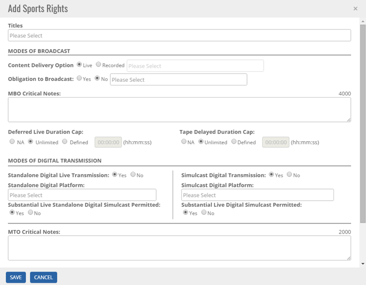
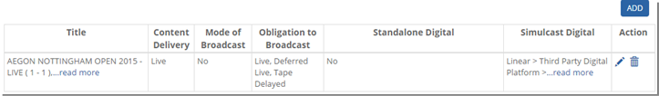


	<section>
		<article>
			<h2>Sports Rights<span></span></h2>
			<div>
				<p></p>
				<p>This tab will appear only for Deal Type as Sports. Click on Sports Rights tab as shown below.</p>

				<p>To add rights click on <b>Add</b> button. Following pop up will appear.</p>

				<div class="triangle-border top">				
					
				</div>

				<p>Select <b>Title</b> from title dropd down for which user wants to add Sports Rights for.</p>

				<p>Select <b>Content Delivery Option</b> as Live or Recorded.</p>

				<p>Select <b>Obligation to Broadcase</b> if any.</p>

				<p>Enter <b>MBO Critical Notes</b> if any for the right.</p>

				<p>Select and enter <b>Deferred Live Duration Cap and Tape Delayed Duration Cap</b>.</p>

				<p>Enter details in <b>Modes of Digital Transimission</b> as per data in agreement.</p>

				<p>Enter <b>MTO Critical Notes</b> if any.</p>

				<p>Select <b>Commentry Languages</b> as either Language or Language Group.</p>

				<p>User can attach file for <b>When to join and leave the LIVE feed section.</b></p>

				<p>To save the right, click on <b>Save</b> button. To cancel saving click on <b>Cancel</b> button.</p>

				<p>After adding rights, page will look like this.</p>

				<div class="triangle-border top">				
					
				</div>

				<p>To edit the rights, click on <b>Edit</b> button.</p>

				<p>To delete the added rights, click on <b>Delete</b> button. It will ask for confirmation "Are you sure you want to delete this Sports Rights?". Click on <b>Yes</b> button to delete the record and <b>No</b> to cancel deletion.</p>

			</div>
		</article>
	</section>